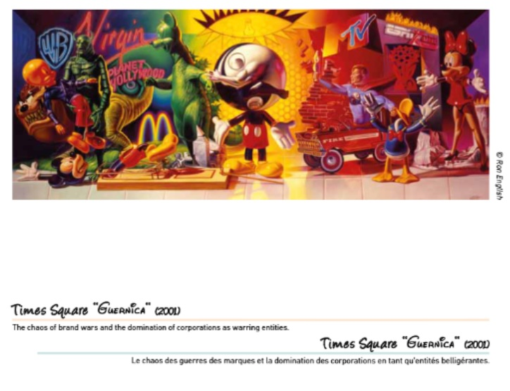
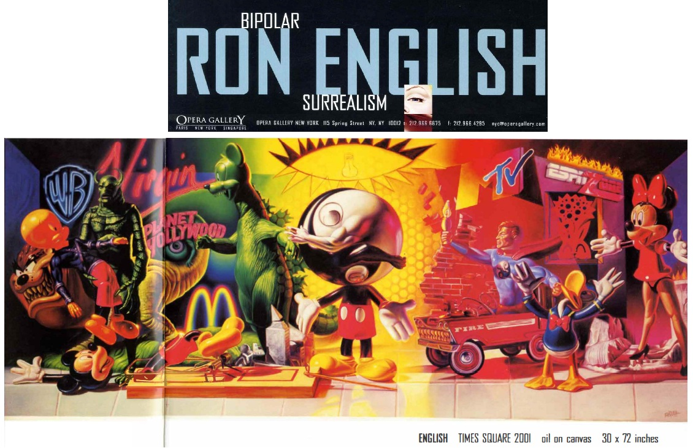

Provenance
Private collection.
Exhibitions
Bipolar Surrealism, Opera Gallery, New York, New York, US, May 24–June 11, 2001.
Ron English / Guernica, Allouche Gallery, New York, New York, US, September 22–October 19, 2016.
Reimagining “Guernica” / La réinvention du “Guernica”, Museo de la Paz de Gernika, Gernika-Lumo, Bizkaia, Spain, April 4–December 10, 2017; the composition was presented as a print on stretched canvas, not as the original painting.
Literature
Bipolar Surrealism (New York: Opera Gallery, 2001), exhibition catalogue.
Ron English, Popaganda: The Art & Subversion of Ron English (San Francisco: Last Gasp, 2001), pp. x–xi. ISBN 1-887128-60-3.

Ron English, Abject Expressionism: The Art of Ron English (San Francisco: Last Gasp, 2007), p. 110. ISBN 978-0867196894.

Reimagining “Guernica” / La réinvention du “Guernica” (Gernika-Lumo, Bizkaia, Spain: Museo de la Paz de Gernika, 2017), digital exhibition catalogue / flip-book.
Ron English, Original Grin: The Art of Ron English (Paris: Cernunnos, 2019), p. 225. ISBN 978-2374950938.

Notes
This work appears in the Museo de la Paz de Gernika’s digital exhibition catalogue / flip-book.
This work is reproduced in the exhibition catalogue for Bipolar Surrealism.
This composition was reproduced as a poster.
Ancillary Documentation
The following materials document catalogue reproduction, museum documentation, related poster format, and source imagery connected to the work.






Selected Online Circulation
Selected examples of the work’s online circulation, reproduction, or discussion. This list is not exhaustive; it is intended to document representative appearances of the image beyond formal exhibition and publication records.